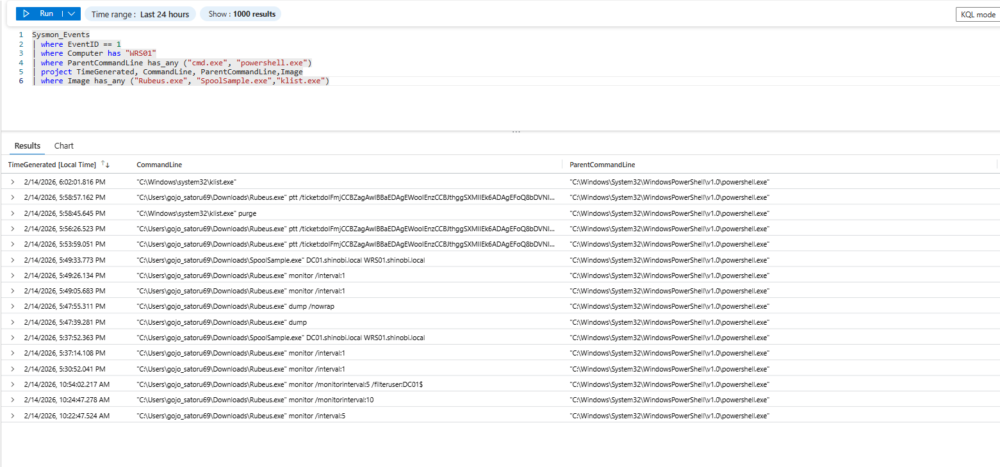
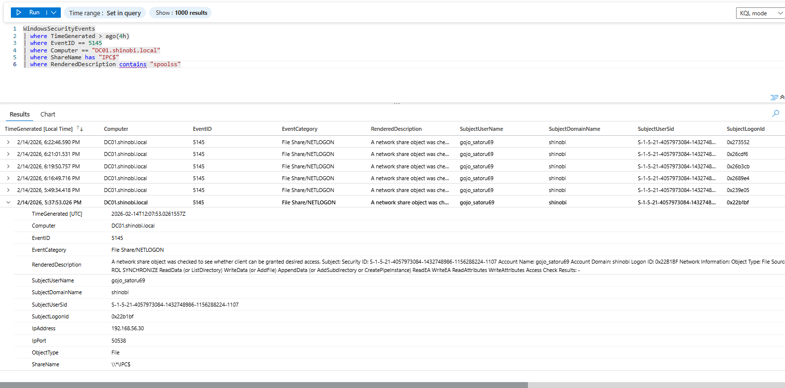
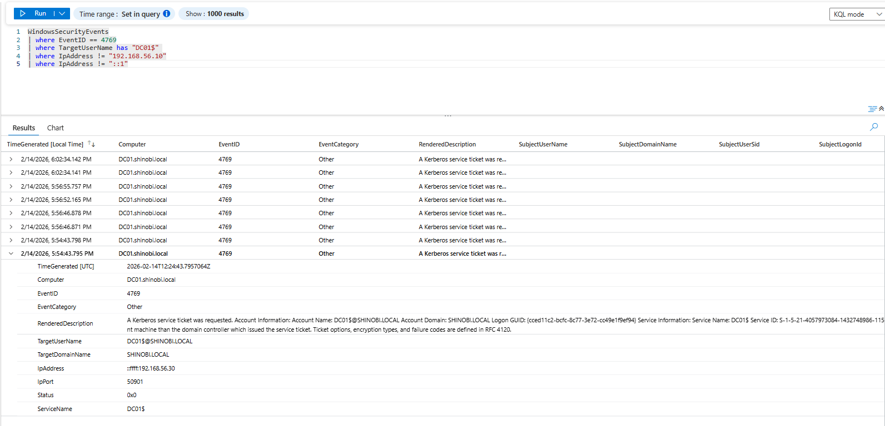

Detection & Telemetry (Unconstrained Delegation & MS-RPRN)
Attack Vector: The attacker executed SpoolSample.exe to trigger the Printer Bug (MS-RPRN), coercing the Domain Controller (DC01$) to authenticate to a compromised workstation (WRS01$). Because WRS01$ was configured with Unconstrained Delegation, the DC delivered a forwardable Ticket Granting Ticket (TGT) in its authentication payload. The attacker monitored LSASS memory using Rubeus.exe, captured the TGT, and injected it into their session via Pass-the-Ticket (PtT).
Key Log Sources:
Objective: Detect the offensive tooling executed by the attacker on the compromised host (WRS01). Logic: We monitor endpoint telemetry for the execution of known offensive binaries (Rubeus.exe, SpoolSample.exe) and their specific command-line arguments (like monitor, ptt, purge).
KQL Query:
Sysmon_Events
| where EventID == 1
| where Computer has "WRS01"
| where ParentCommandLine has_any ("cmd.exe", "powershell.exe")
| project TimeGenerated, CommandLine, Image, ParentCommandLine
| where Image has_any ("Rubeus.exe", "SpoolSample.exe", "klist.exe")
Analysis:
Rubeus.exe monitor /interval:1 (Setting the trap).SpoolSample.exe DC01.shinobi.local WRS01.shinobi.local (Coercion).Rubeus.exe ptt /ticket:... (Injecting the stolen DC01$ ticket).
Objective: Detect the network-level attempt to force the DC to authenticate via the Print Spooler service. Logic: The Printer Bug relies on communicating with the Print Spooler service via SMB Named Pipes. We monitor Event ID 5145 on the Domain Controller for incoming connections to the IPC$ share specifically requesting the spoolss component.
KQL Query:
WindowsSecurityEvents
| where TimeGenerated > ago(4h)
| where EventID == 5145
| where Computer == "DC01.shinobi.local"
| where ShareName has "IPC$"
| where RenderedDescription contains "spoolss"
Analysis:
DC01.shinobi.local.gojo_satoru69 from IP 192.168.56.30 spoolss named pipe interactions against a Domain Controller just prior to an anomalous authentication event is a classic MS-RPRN indicator.
Objective: Verify that the MS-RPRN coercion succeeded and the DC fell into the Unconstrained Delegation trap. Logic: Domain Controllers (DC01$) rarely perform a Network Logon (Type 3) to a standard Windows Workstation. We look for Event ID 4624 on the workstation where the TargetUserName is the Domain Controller.
KQL Query:
WindowsSecurityEvents
| where EventID == 4624
| where LogonType contains "3"
| where TargetUserName == "DC01$"
| where Computer == "WRS01.shinobi.local"
Analysis:
DC01$.WRS01.shinobi.local.Objective: Detect when the attacker attempts to use the stolen DC ticket to request subsequent access. Logic: After the attacker ran Rubeus ptt, any network action they took as the DC generated a Service Ticket Request (Event 4769). The anomaly is the Source IP. DC01$ should only request tickets from its own IP address (192.168.56.10). Here, it requests a ticket from the compromised workstation's IP.
KQL Query:
WindowsSecurityEvents
| where EventID == 4769
| where TargetUserName has "DC01$"
| where IpAddress != "192.168.56.10" // The real DC's IP
| where IpAddress != "::1"
Analysis:
DC01$.::ffff:192.168.56.30 (The attacker's IP).
To eliminate this attack path from shinobi.local:
Print Spooler service on all Domain Controllers to neutralize MS-RPRN coercion.TRUSTED_FOR_DELEGATION flag from standard computers (WRS01$). Use Resource-Based Constrained Delegation (RBCD) if delegation is strictly required.{kind=link}
{kind=link}
{kind=link}
{kind=link}